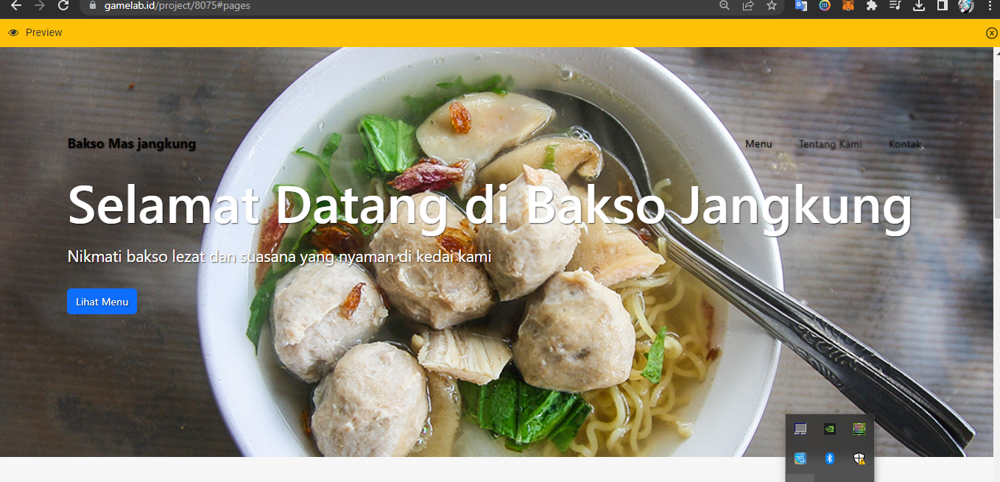
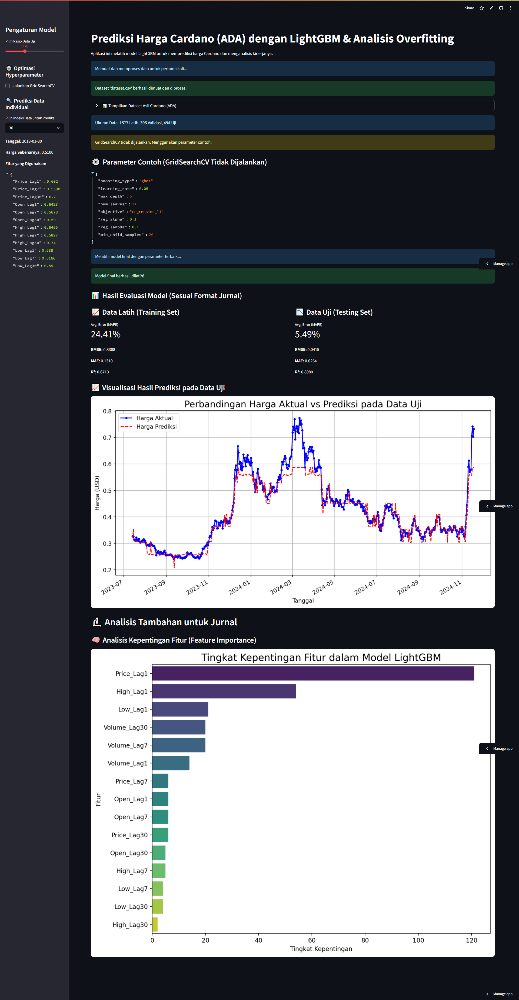

Halo, saya Ahmad Ridho Al Fitri
Lulusan Informatika dengan pengalaman Front-End Web Development dan Machine Learning.

Tentang Saya
Saya adalah seorang lulusan baru S1 Teknik Informatika dari ITENAS dengan minat besar pada pengembangan web dan machine learning. Saya memiliki pengalaman praktis sebagai intern di Gamelab Indonesia, di mana saya terlibat langsung dalam proyek pengembangan front-end untuk website UMKM. Saya antusias untuk belajar, berkolaborasi, dan berkontribusi dalam proyek-proyek teknologi yang inovatif.
Keahlian Teknologi
Pengalaman
Februari 2023 - April 2023
Front-End Web Developer Intern
Gamelab Indonesia
- Mengembangkan komponen front-end yang responsif menggunakan Bootstrap.
- Merancang dan membangun beberapa landing pages untuk klien UMKM.
- Menerjemahkan desain visual menjadi kode HTML dan CSS yang bersih.
- Berkolaborasi dalam tim untuk memahami kebutuhan klien.
Proyek Unggulan

Landing Page UMKM Kuliner
Website landing page yang dibangun untuk UMKM "Bakso Mas Jangkung" selama magang. Fokus pada desain yang bersih dan responsif menggunakan Bootstrap.

Aplikasi Prediksi Harga Kripto
Aplikasi web interaktif (Python & Streamlit) untuk memprediksi harga kripto Cardano (ADA) menggunakan model machine learning LightGBM.
Tertarik Bekerja Sama?
Saya selalu terbuka untuk diskusi mengenai peluang baru atau sekadar mengobrol tentang teknologi. Jangan ragu untuk menghubungi saya!